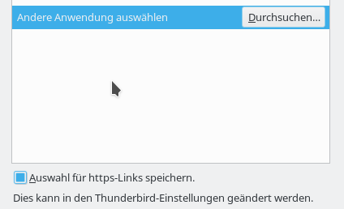

Konfiguration
Dieser Artikel wurde für die folgenden Ubuntu-Versionen getestet:
Ubuntu 17.10 Artful Aardvark
Zum Verständnis dieses Artikels sind folgende Seiten hilfreich:

Links im richtigen Webbrowser öffnen¶
Es kann sein, dass Thunderbird nicht den bevorzugten Webbrowser aus den Systemeinstellungen verwendet und stattdessen beim Öffnen eines Links in einem Dialog nach dem gewünschten Programm fragt.

Dann muss man dieses einmalig wie folgt einstellen: Man wählt am Ende des Fensters schon mal das Feld "Auswahl für https Links speichern" und klickt anschließend auf "Durchsuchen". Im sich öffnenden Fenster drückt man die Tastenkombination Strg + L und tippt in das leere Feld den Pfad /usr/bin. (Dies ist der Standardpfad für Programme unter Ubuntu, siehe auch Verzeichnisstruktur )
Jetzt wählt man das Programm x-www-browser. Dies verweist unter Ubuntu auf den systemweiten Standardbrowser.
Will man einen speziellen Browser - abweichend vom Standardbrowser - benutzen, wählt man stattdessen die entsprechende datei, z.B. chromium-browser, firefox oder opera aus der Liste.
(Diese Einstellung muss ggf. bei einem erneuten Link wiederholt werden, da Thunderbird zwischen den Einstellungen für http- und https -Links unterscheidet.)
Browser bei jedem Link wählen¶
Alternativ kann man Thunderbird dazu veranlassen, beim Anklicken von Links nachzufragen, welches Programm benutzt werden soll.
Dazu öffnet man im Menü "Einstellungen -> Einstellungen -> Erweitert -> Allgemein -> Konfiguration bearbeiten" und sucht die nachfolgenden Einträge: dann mit einem  Klick Register öffnen und ein
Klick Register öffnen und ein  Klick auf "Umschalten", auf
Klick auf "Umschalten", auf true setzen:
network.protocol-handler.warn-external.http
network.protocol-handler.warn-external.https
Thunderbird startet nicht¶
Das könnte an einer vollen Festplatte oder an einer zu großen Mailbox liegen. Am besten die Festplattenbelegung analysieren und Entbehrliches entfernen bzw. auf ein externes Speichermedium verschieben. Zur Pflege der Mailbox siehe Thunderbird/Tipps.
Melodie abspielen, wenn neue Mails eintreffen¶
Man kann Thunderbird so einstellen, dass ein benutzerdefinierter Sound erklingt, wenn neue Mails eintreffen:
"Einstellungen -> Einstellungen -> Allgemein -> Benutzerdefinierter Klang -> Durchsuchen" und die gewünschte Klangdatei (*.wav) auswählen.
Sortierreihenfolge der Emails für alle Ordner als Standard festlegen¶
Bevorzugt man eine andere Sortierreihenfolge der Emails als die Voreinstellung (aufsteigend nach Datum), so kann man das für alle Ordner wie folgt konfigurieren:
Im Thunderbird-Menü "Einstellungen -> Einstellungen" auswählen, dann die Schaltflächen "Erweitert" und "Konfiguration bearbeiten"
mailnews.default_sort_order
auf den gewünschten Wert umstellen
Werte für mailnews.default_sort_order | |
| Wert | Sortierreihenfolge |
1 | aufsteigend (Standardeinstellung) |
2 | absteigend |
mailnews.default_sort_type
auf den gewünschten Wert umstellen
Werte für mailnews.default_sort_type | |
| Wert | Sortierreihenfolge |
17 | keine |
18 | nach Datum (Standardeinstellung) |
19 | nach Betreff |
20 | nach Absender |
21 | nach Eingangsreihenfolge |
22 | nach Thema |
23 | nach Priorität |
24 | nach Status |
25 | nach Größe |
26 | nach Kennzeichnung |
27 | nach ungelesen |
Thunderbird schließen
Alle *.msf-Dateien im Thunderbird-Ordner löschen. Das geht z.B. durch den Befehl:
find ~/.thunderbird -type f -iname "*.msf" -delete
Thunderbird starten, nun sind die Emails in allen Ordnern gemäß der konfigurierten Einstellung sortiert.
 Übersichtsartikel
Übersichtsartikel
- Erstellt mit Inyoka
-
 2004 – 2017 ubuntuusers.de • Einige Rechte vorbehalten
2004 – 2017 ubuntuusers.de • Einige Rechte vorbehalten
Lizenz • Kontakt • Datenschutz • Impressum • Serverstatus -
Serverhousing gespendet von